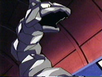

|
|
|
208. Fight for the Light

Ash, Misty and Brock are still heading to the Johto League. They
find the end of the desert and see Olovine city.
They enter the city and look for the gym. They all run for it. Team
Rocket are hiding in a trash can. Suddeny they see a office
building, they want to get a job there for money. There are guards
at the doors and they wont let them in. The gaurds want to see their
gym badges. That is the battle tower so they cant enter. It doesnt
play any importance in this episode, but maybe it is a preview of
another episode?
Meanwhile Ash finds the gym. The door opens and a voice tells them
where to go. A battle field opens up after the doors open and Ash
finally sees the gym leader, she is just a little girl. Ash
challenges her to a 3 on 3 match. She sends out Onix and Ash sends
out Totodile. The onix looks really shiny. She tells Onix to tackle.
Totodile uses water gun before it attacks but Onix faces through it.
It attacks and knocks out Totodile. As recalls it and sends out
Pikachu. Pikachu uses agility and suddenly someone tells them to
stop the match. It is the real Jasmine. Jasmine tells Ash who she
really is. Hee is stumped why his water attack didnt stop Onix.
Jasmine talks to Jenina, and she says she covered her onix with a
water repelant. Jasmine says that she whould spend time away from
her Pokémon. Jasmine says to Ash that she is not Physically or
emotionally able to fight. She says her little Sparkle isn't fealing
well. She gets a call and runs off. The gang is outside thinking
about what happened. Misty sees Jenina cleaning off Onix. She tells
her about the water repelant. Ash asks her where Jasmine is. She
says shes at the lighhouse, so Ash runs there.
Ash sees two lghthouses. The closer one is the Shining Lighthouse so
they go in. Team Rocket is looking at the gang. Meanwhile the gang
starts to climb the lighthouse. They see an Ampharos. Jasmine is
there too. Jasmines grandpa is with her. Ash asks when he can battle
her and she says that she can't battle 'till Ampharos is fealing
better. The man says that he ordered a powerfull medicine at
Ciniwood city. Ash and the gang say that they'd go pick up the
medicine. Team Rocket decided to steal the Ampharos. Everyone sees
them and they do their motto. They jump in their balloon and launch
a mistle that opens up to release Weezing. It usues smokescreen.
Brock gets Ampharose. Outside Jenina sees soemthing bad is happening
at the light house so she goes to help. Team Rocket gets Ampharos
and Brock. They float away on their balloon. Jenina sees them and
uses Onix to try to cut the wire but Jesse sends out Arbok. It uses
Poison sting on Onix and they get away. Onix follows but they go
over water. Onix isnt covered in wax anymore so he cant go in the
water. Jenina tells onix to use wrap attack on Arbok and it is able
to reach it. They make their balloon go away but Onix is holding
onto Arbok really tight. They cant get away because Onix is pulling
them in. She runs up Onix to the cage and opens it up. Brock and
Ampharos get out. Pikachu uses Thunderbolt on them and Onix sends
them flying. Jasmine says that Jenina is learning how to use Onix
well.
The boat is about to head out. Ash hears that there is a badge at
Cinawood city so the gang and Janina run for the boat. Ash wants to
get a badge there is he can't get one at Olovine now. Team Rocket is
stuck on the anchor when they bring it up from the boat, what
trouble will they cause at Cinawood?
Whos that Pokémon? Feralligator
|
|
|
|